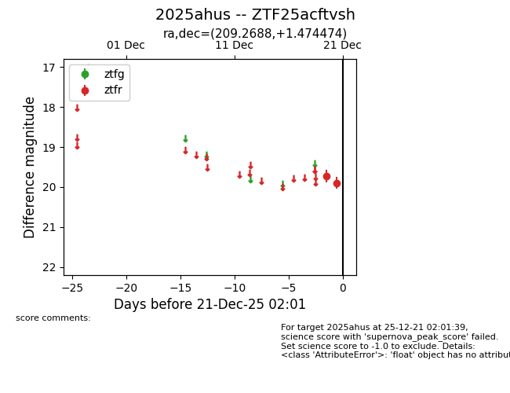
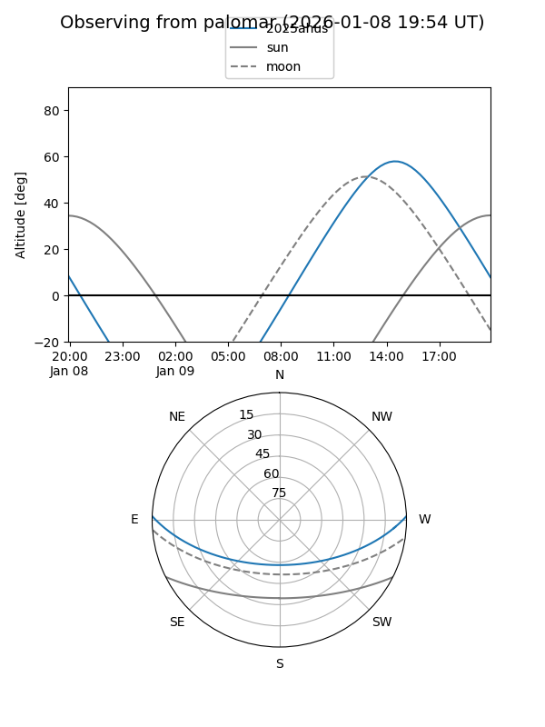

2025ahus
Target 2025ahus at 2025-12-21 02:03
Aliases and brokers:
FINK: fink-portal.org/ZTF25acftvsh
Lasair: lasair-ztf.lsst.ac.uk/objects/ZTF25acftvsh
ALeRCE: alerce.online/object/ZTF25acftvsh
TNS: wis-tns.org/object/2025ahus
YSE: ziggy.ucolick.org/yse/transient_detail/2025ahus
alt names
ZTF25acftvsh (ztf,fink_ztf)
2025ahus (tns,yse)
Coordinates:
equatorial (ra, dec) = 209.2688,+1.47447
equatorial (HMS+DMS) = 13:57:04.51,+01:28:28.11
galactic (l, b) = (337.2077,+59.90414)
Flags:
Photometry:
last ztfr=19.90
2 ztfr detections
Lightcurve

Visibility


Additional plots